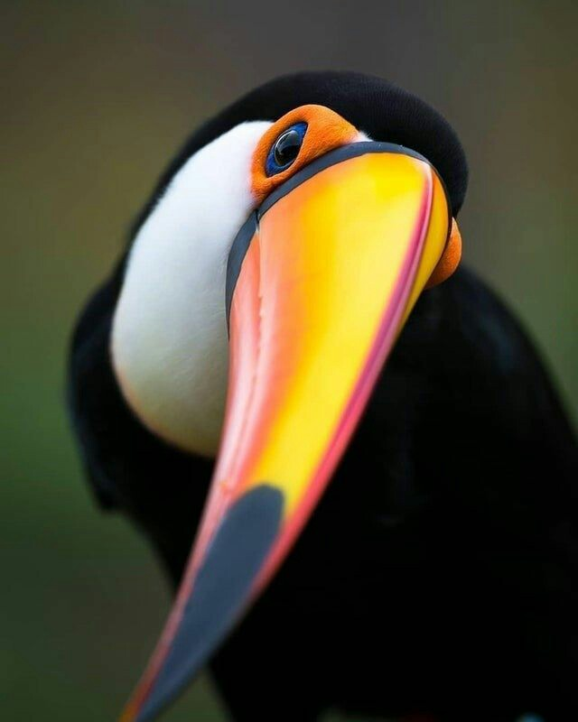

 حیوانات
حیوانات
از فرمانرو جانوران، شاخه طنابداران، رده پرندگان، راسته ماکیان سانان، تیره قرقاولان ، سرده طاووس ، گونه طاووس هندی
اطلاعات بیشترکَل و بُز( نام علمی Capra aegagrus) گونهای از بز کوهی است. نرها که کَل نامیده میشوند شاخهای بلند و شمشیر مانندی دارند.
اطلاعات بیشتراین گونه از روباهها تقریباً در همه زیستگاهها به جز جنگلهای بسیار انبوه و مناطق کاملا بیابانی یافت میشود
اطلاعات بیشترببر بنگال یکی اززیرگونههایببراست که بیشتر درهند وبنگلادش یافته میشود ببرهای بنگال مشهورترین زیرگونه ببرهاهستند
اطلاعات بیشتراین مار از جمله مار هایی میباشد که در دسته بندی مارهای بی خطر طبقهبندی شده است
اطلاعات بیشترنام علمی (Panthera leo) نام یک زیرگونه ازگونه شیراست، این شیردرکشورهای نامیبیا،آنگولا،زئیر، غرب زیمبابوه، و شمال بوتسوانازندگی میکند.
اطلاعات بیشتراز فرمانرو جانوران، شاخه طنابداران، رده پستانداران، راسته گوشتخواران، خانواده گاوسانان، سرده خرس،گونه خرس قهوه ای
اطلاعات بیشترگونه سنجاب ایرانی از جوندگان ایران، جثهای متوسط، دمی بلند و پشمالو دارد که از نصف طول بدن بلندتر است.
اطلاعات بیشترتشیها جوندگان بزرگی هستند که بخشهای زیادی از سطح بدن آنها برای حفاظت از گزند حیوانات شکارچی، پوشیده از خارهایی تیز و بلند است
اطلاعات بیشتردر نیمه اول سال همهروزه از ساعت ۸ صبح تا ۱۰ شب
در نیمه دوم سال همهروزه از ساعت ۸ صبح تا ۵ بعد از ظهر